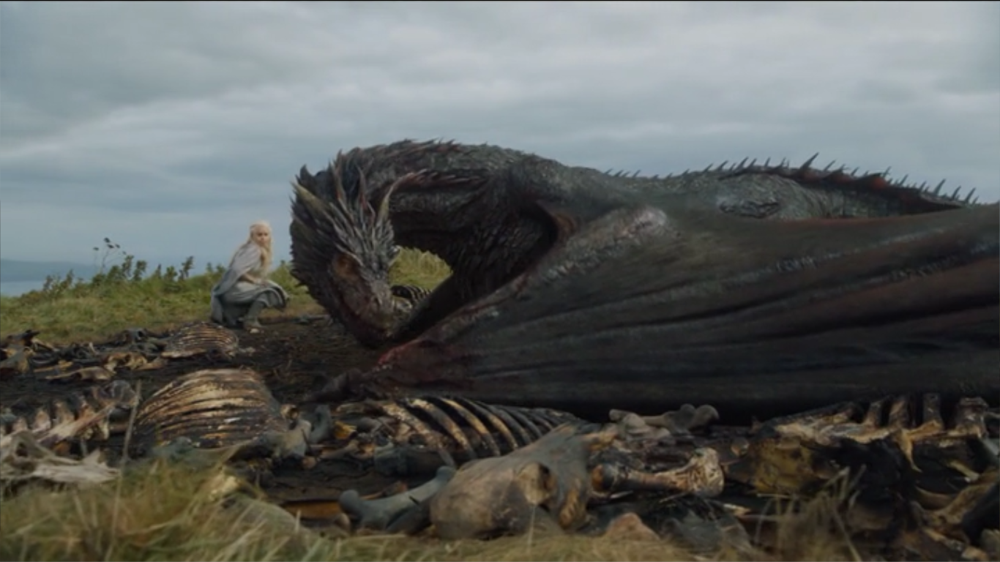

With Joffrey dead, Margaery marries his younger brother Tommen - to the disgust of Cersei , who has developed an enthusiastic loathing for her daughter-in-law. Never one to tread softly, Stannis burns the King Beyond the Wall at the stake – punishment for refusing to swear fealty. Meanwhile Jon Snow is elected leader of the Night's Watch – to the visible disapproval of the senior members of the order. Sansa and Littlefinger leave The Vale – but where are they bound? That would be a surprise, intimates Littlefinger. Actually it is a surprise. He intends marrying Sansa off to horrible Ramsay Bolton ( Iwan Rheon), thus restoring a Stark to Winterfell (albeit by the back door). ramsay In her former family home, Sansa is horrified to find Theon – now the broken and half insane plaything of Ramsay (his mystery torturer). She is brutally abused on her wedding night by the sadistic younger Bolton – with Theon (re-named Reek by Ramsay) forced to watch. Stannis marches south towards Winterfell. With Winter coming, heavy snow threatens his war against Ramsay. He is urged by Melisandre to sacrifice daughter Shireen to the Lord of Light. Stannis reluctantly complies and the weather indeed turns. Alas his troops, not wishing to fight for a religious maniac, desert and he is easily defeated by the Boltons. In the aftermath of the battle he is discovered by Brienne – who fulfils her vow to avenge Renly's death by cutting down the man instrumental in his killing.
arya In Essos, Arya is accepted into the mysterious House of Black and White– though proves slow to subsume her identity into the collective of the Faceless Men. That she has much to learn before becoming “no one” is confirmed as she catches sight of Ser Meryn Trant, the sadistic knight of the Kingsguard and, assuming the likeness of a child prostitute, strikes him down. As punishment for betraying her vows she is struck blind. At King's Landing, Cersei neutralises Margaery – who has her wily claws in the naive Tommen – by striking an alliance with the leader of the Sparrows, an evangelical cult growing in popularity. Everything appears to be going as planned as Margaery's beloved brother Loras is thrown into a deep dark room for sleeping with men and his sister is imprisoned for lying on his behalf. cersei Alas, Cersei's clever scheme is revealed to be rather dimwitted as whisperings of her relationship with Jaime reach the High Sparrow (Jonathan Pryce). She too is dragged away by the religious police and later required to undertake a naked Walk of Shame.
In the desert kingdom of Dorne, Jaime and his sidekick Bronn are on a mission to save his daughter, Princess Myrcella. With Oberon Martyll slain by Cersei's champion, they fear Myrcella is in imminent danger from the Martell family. She is safely retrieved – but poisoned as they set off for home.

night's king Up north, the terrifying extent of the threat posed by the Walkers is revealed as the Night's King attacks Jon Snow and his men at a Wildling encampment. Alas, his warnings are not heeded back at the Wall where senior members of the Watch kill Snow as revenge for his traitorous alliance with the Free Folk. In Essos Daenerys's hold on the city of Meereen slips when the Sons of the Harpy stage an ambush at a grand gladiatorial bout. She is rescued by her dragon Drogon and swept away to destination unknown. Her new adviser Tyrion – smuggled across the narrow sea to Essos by Varys – will rule in her stead as Ser Jorah and her lover Daario set off on her trail ( Ser Jorah is utterly smitten with Daenerys, of course).